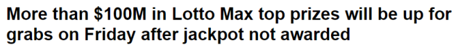
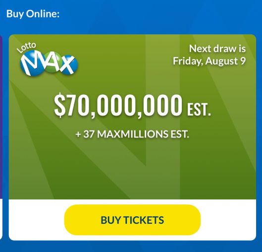
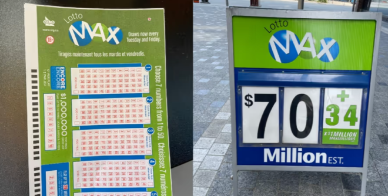

周二（8月6日）举行的Lotto Max开奖奖池十分巨大，虽然没有人匹配中奖号码07、12、13、30、38、46、48和bonus 28赢得7,000万头奖，但仍有多位玩家赢得巨额奖金。
5位彩票玩家非常接近中奖号码，他们匹配了七个中奖号码中的六个以及bonus号码。虽然他们没有赢得头奖，但每人都将获得六位数的奖金。


图源：OLG
根据PlayNow、大西洋彩票和OLG的数据，中奖彩票的销售地点如下：一张在BC省Abbotsford、一张在加拿大西部、一张在纽芬兰和拉布拉多的Paradise、两张分别在安省的Kawartha Lakes和Oshawa。
还有其他大赢家。
周二的抽奖还有34个Maxmillions百万大奖，加拿大有6名彩票玩家中奖后成为了百万富翁。六张价值100万的中奖彩票分别在安省金斯敦、安省密西沙加、加拿大西部、BC省枫树岭和魁省售出。魁省有两名中奖者。
没有人赢得BC省的50万Extra Prize大奖或安省的100万Encore奖金。
OLG在一份新闻稿中表示：“2024年8月9日周五举行的下一次Lotto Max抽奖降有更多的中奖机会，头奖金额高达7000万元，此外还有37个Maxmillions百万大奖。奖池总额达到令人难以置信的1.07亿。”

图源：Irish Mae Silvestre/Daily Hive
祝大家好运！